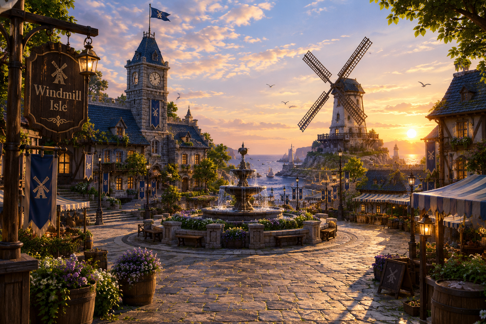
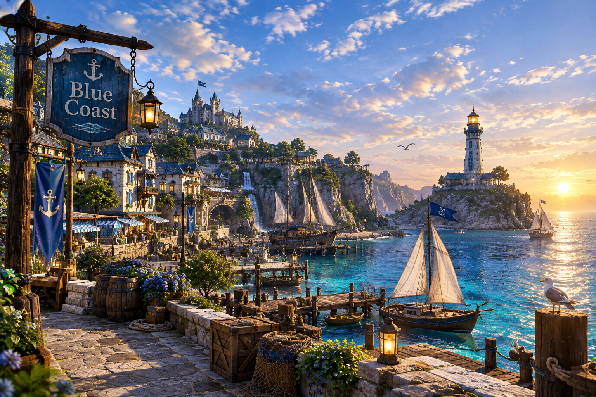
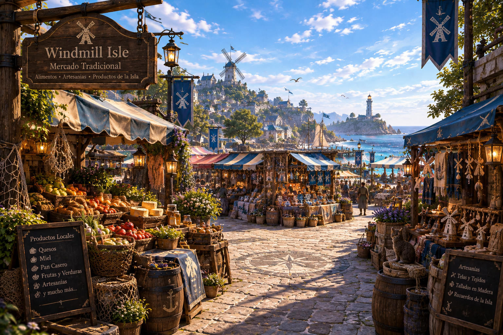

Windmill Square
Es la plaza principal de Windmill Isle y uno de los lugares más representativos de la isla. Está rodeada de edificios tradicionales y antiguos molinos de viento.

¿Que Hacer?
- Recorrer la plaza.
- Observar los molinos.
- Sacar fotografías.
- Visitar tiendas y restaurantes.
- Probar comidas locales.
¿Por que visitarlo?
Porque representa una parte importante de la identidad de Windmill Isle y permite conocer su arquitectura tradicional.
Blue Coast
Es una zona costera conocida por sus playas, pequeñas bahías y aguas cristalinas.

¿Que Hacer?
- Nadar
- Practicar kayak.
- Relajarse en la playa.
- Realizar paseos en barco.
- Practicar actividades acuáticas.
¿Por qué visitarlo?
Es uno de los mejores lugares para disfrutar del mar y de las actividades al aire libre.
Mercado de Windmill Isle
Mercado tradicional con alimentos, artesanías y productos propios de la isla.

¿Que Hacer?
- Paseos en barco
- kayak y actividades acuáticas
- Pesca
- Recorridos historicos
- Fotografías